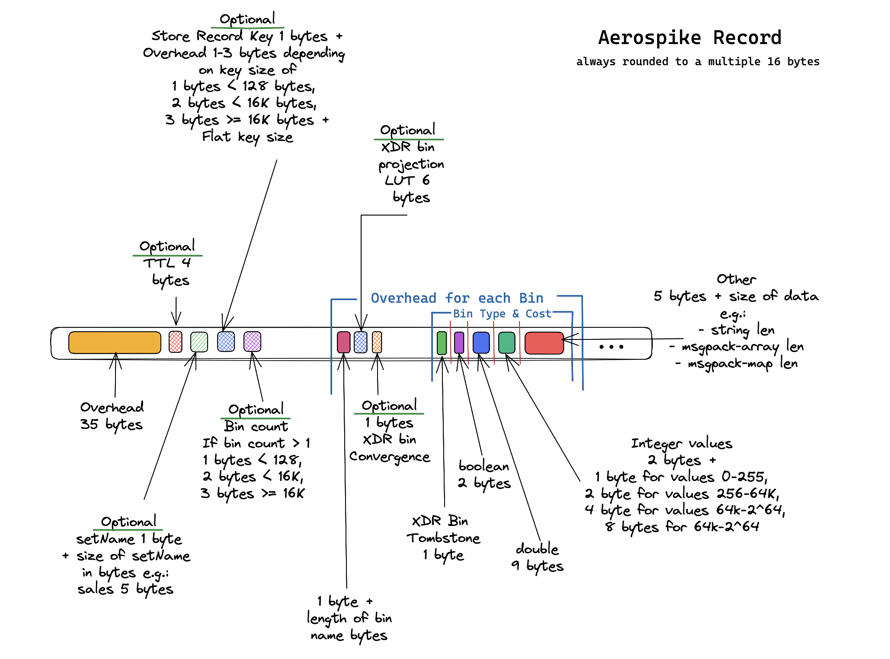

Teranode Data Model - UTXO¶
UTXO Data Model¶
For every transaction, a UTXO record is stored in the database. The record contains the following fields:
| Field Name | Data Type | Description |
|---|---|---|
| utxos | Array of Byte[32] or Byte[68] |
A list of UTXOs stored as variable-length byte arrays. Each unspent UTXO is 32 bytes (UTXO hash only). Each spent UTXO is 68 bytes: 32-byte UTXO hash + 36-byte spending data (32-byte spending transaction ID + 4-byte little-endian input index). |
| utxoSpendableIn | Map<Integer, Integer> |
A map where the key is the UTXO offset and the value is the block height after which the UTXO is spendable. |
| recordUtxos | Integer |
Total number of UTXOs in this record. |
| spentUtxos | Integer |
Number of UTXOs that have been spent in this record. |
| frozen | Boolean |
Indicates whether the UTXO or transaction is frozen. |
| locked | Boolean |
Indicates whether the transaction outputs can be spent. Part of the two-phase commit protocol. Set to true during initial creation when the transaction is validated. Set to false in two scenarios: (1) after successful addition to block assembly, or (2) when mined via SetMinedMulti. See Two-Phase Commit Process for complete workflow. |
| spendingDatas | []*spendpkg.SpendingData |
Array tracking which transactions spent which outputs. Each element corresponds to an output index and contains the spending transaction ID and input index. Nil for unspent outputs. Critical for validation and reorganization handling. |
| conflicting | Boolean |
Indicates whether this transaction is a double spend. |
| conflictingChildren | Array<chainhash.Hash> |
List of transaction hashes that spend from this transaction and are also marked as conflicting. |
| unminedSince | uint32 |
When set to a non-zero block height, indicates the transaction is unmined on the longest chain and tracks when it was first stored. When 0 (zero), indicates the transaction has been mined on the longest chain. Enables transaction recovery after service restarts. |
| createdAt | Integer (Timestamp) |
The timestamp when the unmined transaction was first added to the store. Used for ordering transactions during recovery. |
| preserveUntil | Integer (Block Height) |
Specifies a block height until which a transaction should be preserved from deletion. Used to protect parent transactions of unmined transactions from being deleted during cleanup operations. |
| spendingHeight | uint32 |
For coinbase transactions, stores the block height after which outputs become spendable. BSV enforces a 100-block maturity period, so this is set to coinbase_block_height + 100. Zero for non-coinbase transactions. |
| blockIDs | Array<Integer> |
List of block IDs that reference this UTXO. |
| blockHeights | Array<uint32> |
List of block heights where this transaction appears. Used by the validator to identify the height at which a UTXO was mined. |
| subtreeIdxs | Array<int> |
List of subtree indexes where this transaction appears within blocks. |
| external | Boolean |
Flag indicating whether the transaction is stored externally (used for fetching external raw transaction data). |
| totalExtraRecs | Integer (Optional) |
The number of UTXO records associated with the transaction, used for pagination. |
| reassignments | Array<Map> |
Tracks UTXO reassignments. Contains maps with keys such as offset, utxoHash, newUtxoHash, and blockHeight. |
| tx | bt.Tx Object |
Raw transaction data containing inputs, outputs, version, and locktime. |
| fee | Integer |
Transaction fee associated with this UTXO. |
| sizeInBytes | Integer |
The size of the transaction in bytes. |
| txInpoints | TxInpoints |
Transaction input outpoints containing parent transaction hashes and their corresponding output indices. |
| isCoinbase | Boolean |
Indicates whether this UTXO is from a coinbase transaction. |
Individual UTXO Encoding¶
Each UTXO in the utxos array uses a variable-length binary encoding that indicates whether the output has been spent.
Unspent UTXO Format (32 bytes)¶
An unspent UTXO contains only the UTXO hash:
| Byte Range | Size | Field | Description |
|---|---|---|---|
| [0:32] | 32 bytes | UTXO Hash | Little-endian hash uniquely identifying this output |
Example: A transaction with 5 outputs creates 5 unspent UTXOs, each 32 bytes.
Spent UTXO Format (68 bytes)¶
When a UTXO is spent, spending data is appended:
| Byte Range | Size | Field | Description |
|---|---|---|---|
| [0:32] | 32 bytes | UTXO Hash | Little-endian hash of the original UTXO |
| [32:64] | 32 bytes | Spending TX ID | Little-endian hash of the transaction that spent this UTXO |
| [64:68] | 4 bytes | Input Index | Little-endian uint32 indicating which input in the spending transaction consumed this UTXO |
Example: When output 0 of transaction A is spent by input 2 of transaction B, the UTXO grows from 32 to 68 bytes, with bytes [32:64] containing transaction B's ID and bytes [64:68] containing 0x02000000 (little-endian 2).
Frozen UTXO Encoding (68 bytes)¶
Frozen UTXOs (managed by the alert system) use a special spending data pattern:
| Byte Range | Size | Field | Description |
|---|---|---|---|
| [0:32] | 32 bytes | UTXO Hash | Original UTXO hash |
| [32:68] | 36 bytes | Frozen Marker | All 36 bytes set to 0xFF (255) |
Detection (from stores/utxo/aerospike/teranode.lua):
local FROZEN_BYTE = 255
local SPENDING_DATA_SIZE = 36
function isFrozen(spendingData)
if spendingData == nil then return false end
for i = 1, SPENDING_DATA_SIZE do
if spendingData[i] ~= FROZEN_BYTE then return false end
end
return true
end
Field Extraction¶
The Lua implementation in stores/utxo/aerospike/teranode.lua extracts fields as follows:
-- Get UTXO from array (Lua arrays are 1-based)
local utxo = utxos[offset + 1]
-- Extract UTXO hash (always present)
local utxoHash = bytes.get_bytes(utxo, 1, 32)
-- Check if spent
if bytes.size(utxo) == 68 then
-- Extract spending transaction ID
local spendingTxID = bytes.get_bytes(utxo, 33, 32)
-- Extract input index
local inputIndex = bytes.get_bytes(utxo, 65, 4)
-- Check if frozen
if isFrozen(spendingData) then
-- UTXO is frozen by alert system
end
end
Size-Based State Detection:
size == 32→ Unspentsize == 68 && !frozen→ Spent normallysize == 68 && frozen→ Frozen by alert system
Additionally, note how the raw transaction data (tx (bt.Tx Object)) is stored in the record. This includes:
- Version: The transaction version.
- LockTime: The transaction lock time.
- Inputs: Array of inputs used in the transaction.
- Outputs: Array of outputs (UTXOs) created by the transaction.
Time to Live (TTL) Fields¶
Typically, UTXO records are kept with a time-to-live value that is set when all UTXOs in a record are spent or reassigned.
| Field Name | Data Type | Description |
|---|---|---|
| TTL | Integer |
Time-to-live value for the record. Set when: - All UTXOs in a record are spent or reassigned (for automatic pruning) - Transaction is marked as conflicting |
Aerospike Storage¶
If storing in Aerospike, the UTXO record is stored as a bin in the Aerospike database. The bin contains the UTXO data in a serialized format, containing up to 1024 bytes.

For more information, please refer to the official Aerospike documentation: https://aerospike.com.
UTXO MetaData¶
For convenience, the UTXO can be decorated using the UTXO MetaData format, widely used in Teranode:
| Field Name | Description | Data Type |
|---|---|---|
| Tx | The raw transaction data. | *bt.Tx Object |
| Hash | Unique identifier for the transaction. | String/Hexadecimal |
| Fee | The fee associated with the transaction. | Decimal |
| Size in Bytes | The size of the transaction in bytes. | Integer |
| TxInpoints | Transaction input outpoints containing parent transaction hashes and their corresponding output indices. | TxInpoints Object |
| BlockIDs | List of IDs of the blocks that include this transaction. | Array of Integers |
| BlockHeights | List of block heights where this transaction appears. | Array of Integers |
| SubtreeIdxs | List of subtree indexes where this transaction appears within blocks. | Array of Integers |
| LockTime | The earliest time or block number that this transaction can be included in the blockchain. | Integer/Timestamp or Block Number |
| IsCoinbase | Indicates whether the transaction is a coinbase transaction. | Boolean |
| Locked | Flag indicating whether the transaction outputs can be spent. Part of the two-phase commit process for block assembly. | Boolean |
| Conflicting | Indicates whether this transaction is a double spend. | Boolean |
| ConflictingChildren | List of transaction hashes that spend from this transaction and are also marked as conflicting. | Array of Strings/Hexadecimals |
TxInpoints Structure¶
External Package: The
TxInpointsstructure is defined in the externalgithub.com/bsv-blockchain/go-subtreepackage. The implementation details below are provided for reference and developer convenience.
The TxInpoints field contains complete outpoint information for all transaction inputs, providing precise identification of which UTXOs are being consumed by a transaction.
Structure Definition¶
type TxInpoints struct {
ParentTxHashes []chainhash.Hash // Array of parent transaction hashes
Idxs [][]uint32 // Array of arrays containing output indices for each parent transaction
nrInpoints int // Internal variable tracking total number of inpoints
}
Field Descriptions¶
| Field | Type | Description |
|---|---|---|
ParentTxHashes |
[]chainhash.Hash |
Array of unique parent transaction hashes from which this transaction consumes UTXOs |
Idxs |
[][]uint32 |
Parallel array to ParentTxHashes. Each element contains the output indices being consumed from the corresponding parent transaction |
nrInpoints |
int |
Internal counter tracking the total number of individual outpoints across all parent transactions |
Key Features¶
-
Complete Outpoint Information: Each input is precisely identified by both the parent transaction hash and the specific output index being consumed.
-
Efficient Storage: Uses parallel arrays to avoid duplicating parent transaction hashes when multiple outputs from the same transaction are consumed.
-
Validation Support: Enables validators to quickly determine exactly which UTXOs are being spent without additional lookups.
-
Chained Transaction Support: Facilitates handling of complex transaction chains where multiple outputs from the same parent transaction are consumed.
Example¶
For a transaction consuming:
- Output 0 of transaction A
- Output 2 of transaction A
- Output 1 of transaction B
The TxInpoints structure would contain:
This structure efficiently represents that the transaction consumes three UTXOs total: two from transaction A (outputs 0 and 2) and one from transaction B (output 1).
Note:
-
Blocks: 1 or more block hashes. Each block represents a block that mined the transaction.
-
Typically, a tx should only belong to one block. i.e. a) a tx is created (and its meta is stored in the UTXO store) and b) the tx is mined, and the mined block hash is tracked in the UTXO store for the given transaction.
-
However, in the case of a fork, a tx can be mined in multiple blocks by different nodes. In this case, the UTXO store will track multiple block hashes for the given transaction, until such time that the fork is resolved and only one block is considered valid.
-
Block Heights and Subtree Indexes: These fields track the exact location of transactions within the blockchain.
- The block heights array is particularly important for validation, as it gives visibility on what height a UTXO was mined. While most UTXOs are mined at the same height across parallel chains or forks, this is not always the case. Storing this information enables the validator to efficiently determine the height of UTXOs being spent without performing expensive lookups. Block heights indicate how deep in the chain a transaction is, which is important for maturity checks.
- The subtree indexes are primarily informational, allowing for future features that might need to locate exactly where a transaction was placed within a block's structure, enabling potential parallel processing and efficient lookups.
UTXO State Lifecycle¶
A UTXO progresses through multiple states during its lifecycle, from creation through spending to eventual cleanup. Understanding these states is critical for implementing consensus rules, validation logic, and cleanup operations.
State Overview¶
| State | Key Indicators | Description |
|---|---|---|
| Created & Locked | locked=true, unminedSince>0, blockIDs=[] |
Transaction validated and stored, outputs not yet spendable. Part of two-phase commit protocol. |
| Unlocked & Unmined | locked=false, unminedSince>0, blockIDs=[] |
Transaction outputs spendable but not yet mined in a block. |
| Mined | unminedSince=0, blockIDs populated |
Transaction included in a block on the longest chain. UTXOs become permanently spendable (subject to maturity rules). |
| Unspent | UTXO size = 32 bytes | Output has not been consumed by any transaction. |
| Spent | UTXO size = 68 bytes, not frozen | Output consumed by another transaction. Contains spending transaction ID and input index. |
| Frozen | UTXO size = 68 bytes, frozen pattern (0xFF) | Output frozen by alert system. Cannot be spent until unfrozen. |
| Conflicting | conflicting=true |
Transaction is a double-spend attempt. All outputs marked as invalid. |
| Scheduled for Deletion | deleteAtHeight set |
All outputs spent or transaction conflicting. Will be deleted at specified block height. |
State Transitions¶
The following table shows valid state transitions and their triggers:
| From State | To State | Trigger | Implementation |
|---|---|---|---|
| Created & Locked | Unlocked & Unmined | Block assembly completion or explicit unlock | SetLocked(false) in stores/utxo/aerospike/locked.go |
| Unlocked & Unmined | Mined | Transaction included in block on longest chain | SetMinedMulti() in stores/utxo/aerospike/set_mined.go |
| Mined | Unlocked & Unmined | Block reorganization removes tx from longest chain | SetMinedMulti() with UnsetMined=true |
| Unspent (32B) | Spent (68B) | UTXO consumed by validated transaction | Spend() in stores/utxo/aerospike/spend.go |
| Spent (68B) | Unspent (32B) | Block reorganization or validation rollback | Unspend() in stores/utxo/aerospike/un_spend.go |
| Any | Frozen | Alert system freeze command | FreezeUTXO() in stores/utxo/aerospike/alert_system.go |
| Frozen | Unspent or Spent | Alert system unfreeze command | UnfreezeUTXO() in stores/utxo/aerospike/alert_system.go |
| Any | Conflicting | Double-spend detected | ProcessConflicting() in stores/utxo/process_conflicting.go |
| Any | Scheduled for Deletion | All UTXOs spent or tx conflicting | Lua script signals in stores/utxo/aerospike/spend.go and set_mined.go |
Detailed State Descriptions¶
Created & Locked State¶
When a transaction is first validated and stored:
lockedfield is set totrueduringCreate()operationunminedSincefield is set to current block heightblockIDs,blockHeights,subtreeIdxsarrays are empty- Outputs cannot be spent while in this state
- Part of the two-phase commit protocol for block assembly
- Prevents race conditions where transactions are spent before block assembly completes
Exit conditions:
- Successful block assembly →
SetLocked(false)→ transitions to Unlocked & Unmined - Transaction mined via
SetMinedMulti()→ automatically unlocks and transitions to Mined
Unlocked & Unmined State¶
After unlock but before mining:
locked=false, allowing outputs to be spentunminedSincestill set to block height when first storedblockIDsarray still empty- Outputs can be spent by other transactions
- Enables transaction chains where child transactions spend parent outputs before mining
Exit conditions:
- Transaction mined →
SetMinedMulti()setsunminedSince=0, populatesblockIDs - Transaction becomes conflicting → marked as double-spend
Mined State¶
Transaction permanently recorded in blockchain:
unminedSince=0(zero indicates mined)blockIDsarray contains at least one block IDblockHeightsarray contains corresponding block heightssubtreeIdxsarray contains subtree positions within blocks- During forks, arrays may contain multiple entries (one per fork branch)
- After fork resolution, only longest chain block remains
Special case - Coinbase maturity:
- Coinbase transactions set
spendingHeight = coinbase_block_height + 100 - Outputs cannot be spent until chain reaches
spendingHeight - Enforces BSV's 100-block maturity rule for coinbase rewards
Exit conditions:
- Block reorganization removes block from longest chain →
SetMinedMulti()withUnsetMined=true - Sets
unminedSinceback to block height, clears block references
Unspent State (32 bytes)¶
UTXO has not been consumed:
- UTXO entry in
utxosarray is exactly 32 bytes - Contains only the UTXO hash (little-endian)
- Can be spent by any valid transaction (subject to maturity rules)
- Detection:
bytes.size(utxo) == 32in Lua scripts
Exit conditions:
Spend()operation adds 36-byte spending data → transitions to Spent- Alert system freeze → spending data set to 0xFF pattern → transitions to Frozen
Spent State (68 bytes)¶
UTXO consumed by another transaction:
- UTXO entry grows to 68 bytes total
- Bytes [0:32]: Original UTXO hash
- Bytes [32:64]: Spending transaction ID (32 bytes, little-endian)
- Bytes [64:68]: Input index in spending transaction (4 bytes, little-endian uint32)
- Detection:
bytes.size(utxo) == 68 && !isFrozen()in Lua scripts
Tracking:
spentUtxoscounter incremented- When
spentUtxos == recordUtxos, signalsLuaSignalAllSpent - Triggers DAH (Delete At Height) setting for cleanup
Exit conditions:
- Block reorganization or validation rollback →
Unspend()removes 36-byte spending data - Alert system freeze → spending data changed to 0xFF pattern → transitions to Frozen
Frozen State (68 bytes)¶
UTXO frozen by alert system:
- UTXO entry is 68 bytes with special pattern
- Bytes [0:32]: Original UTXO hash
- Bytes [32:68]: All 36 bytes set to
0xFF(255) - Cannot be spent until explicitly unfrozen
- Spending attempts return
LuaErrorCodeFrozenerror -
Detection logic from
stores/utxo/aerospike/teranode.lua:
Conditional freeze:
- UTXOs can also be frozen until a specific block height using
utxoSpendableInmap - Spending attempts before the height return
LuaErrorCodeFrozenUntilerror - Automatically unfreezes when blockchain reaches the specified height
Exit conditions:
- Alert system unfreeze → removes 0xFF pattern, restores previous state
Conflicting State¶
Transaction marked as double-spend:
conflicting=trueflag set- All outputs become invalid and unspendable
conflictingChildrenarray tracks any transactions that attempted to spend from this conflicting transaction- TTL (Time-To-Live) set immediately for cleanup
- Processed by
ProcessConflicting()instores/utxo/process_conflicting.go
Implications:
- Cannot transition out of conflicting state (terminal state)
- Entire transaction tree marked as conflicting
- Pruning occurs after TTL expiration
Scheduled for Deletion¶
Record marked for automatic pruning:
deleteAtHeightfield set to specific block height- Occurs when all UTXOs in record are spent or reassigned
- Occurs when transaction marked as conflicting
- Also set via
preserveUntilfield to protect parent transactions - Aerospike TTL automatically prunes record when blockchain reaches specified height
- Child pagination records also have DAH set via
SetDAHForChildRecords() - External blob storage has DAH set via
setDAHExternalTransaction()
Triggers:
LuaSignalDAHSetsignal from Lua scripts when last UTXO spentLuaSignalDAHUnsetsignal when previously spent UTXO is unspent (reorganization)- Formula:
deleteAtHeight = currentBlockHeight + blockHeightRetention
Implementation:
- Main record: DAH set via Lua script during
Spend()orSetMined() - Pagination records:
SetDAHForChildRecords()updates all child records - External transactions:
setDAHExternalTransaction()updates blob storage metadata
Storage Implementation¶
UTXO records are stored using different strategies based on transaction size and output count. Teranode uses a hybrid storage approach combining Aerospike key-value store with external blob storage to handle transactions of any size efficiently.
Storage Architecture Overview¶
Transaction Size Check
│
├──> Small (<1MB, ≤20K outputs)
│ └──> Single Aerospike Record
│ ├─ Transaction data (inputs/outputs)
│ ├─ UTXO array (32 or 68 bytes each)
│ └─ Metadata (fee, blockIDs, etc.)
│
├──> Medium (≤1MB, >20K outputs)
│ └──> Multiple Aerospike Records (Pagination)
│ ├─ Master Record (index 0)
│ │ ├─ Full transaction data
│ │ ├─ First 20K UTXOs
│ │ └─ Metadata + totalExtraRecs
│ └─ Child Records (index 1, 2, 3...)
│ ├─ Next 20K UTXOs per record
│ └─ Subset of metadata
│
└──> Large (>1MB or force external)
└──> External Blob Storage + Aerospike
├─ Blob Storage
│ ├─ FileTypeTx (.tx) - Full transaction
│ └─ FileTypeOutputs (.outputs) - Outputs only
└─ Aerospike Records
├─ external=true flag
├─ UTXO arrays (paginated if >20K)
└─ Metadata only (no tx data)
Record Pagination (>20,000 Outputs)¶
Transactions with more than 20,000 outputs are automatically split across multiple Aerospike records to stay within database size constraints.
Pagination Strategy¶
- Batch Size: 20,000 UTXOs per record (configurable via
utxoBatchSizesetting) - Master Record (index 0): Contains first batch of UTXOs plus complete metadata
- Child Records (index 1+): Contain subsequent UTXO batches with limited metadata
Key Calculation (from stores/utxo/aerospike/create.go):
// Master record key
key = hash(txID)
// Child record keys
keySource = hash(txID + childIndex) // childIndex = 1, 2, 3...
Master Record (Index 0)¶
Contains complete transaction metadata and first UTXO batch:
| Field | Description | Presence |
|---|---|---|
tx or external |
Full transaction data OR external=true flag | Always |
utxos |
First 20,000 UTXO entries | Always |
totalUtxos |
Total count of ALL UTXOs across all records | Always |
totalExtraRecs |
Number of child records (pagination records) | If >20K outputs |
recordUtxos |
Number of non-nil UTXOs in THIS record | Always |
spentUtxos |
Number of spent UTXOs in THIS record | Always |
spentExtraRecs |
Number of child records fully spent | If >20K outputs |
blockIDs, blockHeights, subtreeIdxs |
Block references | Always |
fee, sizeInBytes, isCoinbase, etc. |
Transaction metadata | Always |
Child Records (Index 1+)¶
Contain UTXO batches with minimal metadata:
| Field | Description | Presence |
|---|---|---|
utxos |
Next 20,000 UTXO entries | Always |
recordUtxos |
Number of non-nil UTXOs in THIS child record | Always |
spentUtxos |
Number of spent UTXOs in THIS child record | Always |
deleteAtHeight |
Cleanup trigger for this record | When set |
| Common metadata | Version, locktime, fee, isCoinbase, locked, conflicting | Always |
Child Record DAH Management:
- When master record's UTXOs all spent →
SetDAHForChildRecords()sets DAH on all children - When master record unspentalready →
SetDAHForChildRecords()with DAH=0 clears DAH on all children - Enables coordinated cleanup of entire transaction across all pagination records
Pagination Example¶
Transaction with 45,000 outputs splits into 3 records:
Master Record (key = hash(txID), index 0):
- utxos[0:20000] // First 20K UTXOs
- totalUtxos = 45000
- totalExtraRecs = 2
- recordUtxos = 20000 // Non-nil in this record
- spentUtxos = 0
- spentExtraRecs = 0
- Full tx data or external=true
- All metadata fields
Child Record 1 (key = hash(txID+1), index 1):
- utxos[20000:40000] // Second 20K UTXOs
- recordUtxos = 20000
- spentUtxos = 0
- Common metadata only
Child Record 2 (key = hash(txID+2), index 2):
- utxos[40000:45000] // Final 5K UTXOs
- recordUtxos = 5000
- spentUtxos = 0
- Common metadata only
Retrieval Process (from stores/utxo/aerospike/get.go):
- Fetch master record by transaction ID
- Read
totalExtraRecsto determine number of child records - Loop from index 1 to
totalExtraRecs, fetching each child record - Combine UTXOs from all records into single
spendingDatasarray - Calculate correct offset:
baseOffset = recordNum * utxoBatchSize
External Blob Storage¶
Large transactions exceeding Aerospike size limits are stored in external blob storage (S3, filesystem, or HTTP-accessible storage).
Trigger Conditions¶
External storage used when:
- Transaction size >
MaxTxSizeInStoreInBytes(typically 1MB) - Transaction has >20,000 outputs (automatic with pagination)
- Configuration forces externalization:
ExternalizeAllTransactions=true
File Types¶
Two file type options for external storage:
| File Type | Extension | Contents | Use Case |
|---|---|---|---|
FileTypeTx |
.tx |
Complete serialized transaction (inputs + outputs) | Full transactions with <100K outputs |
FileTypeOutputs |
.outputs |
UTXO wrapper containing only outputs | Partial transactions, very large output sets, or when inputs not available |
UTXOWrapper Format (FileTypeOutputs):
type UTXOWrapper struct {
TxID chainhash.Hash
Height uint32
Coinbase bool
UTXOs []*UTXO
}
type UTXO struct {
Index uint32 // Output index
Value uint64 // Satoshis
Script []byte // Locking script
}
Storage Flow¶
Normal Transactions (from stores/utxo/aerospike/create.go:sendStoreBatch()):
- Calculate transaction extended size
-
If size ≤ 1MB and ≤20K outputs:
- Store transaction data in Aerospike
inputsandoutputsbins - Store UTXOs in
utxosbin - Set
external=false -
If size > 1MB:
-
Write transaction to blob storage as
.txfile - Store only metadata and UTXOs in Aerospike
- Set
external=trueflag
- Store transaction data in Aerospike
Partial Transactions (outputs only):
- Create
UTXOWrapperwith non-nil outputs - Serialize wrapper to bytes
- Write to blob storage as
.outputsfile - Store metadata and UTXO hashes in Aerospike
- Set
external=trueflag
Retrieval from External Storage¶
Full Transaction Retrieval (from stores/utxo/aerospike/get.go:GetTxFromExternalStore()):
- Check
externalflag in Aerospike record -
If true, attempt to fetch from blob storage:
- Try
FileTypeTxfirst (.txfile) - If not found, try
FileTypeOutputs(.outputsfile) - Deserialize transaction or outputs
- Combine with metadata from Aerospike
- Return complete transaction data
- Try
Caching Strategy:
- External transaction cache (
externalTxCache) caches frequently accessed transactions -
Cache decisions based on number of active outputs:
numberOfActiveOutputs < 2→ Do not cache (single-use)numberOfActiveOutputs ≥ 2→ Cache for reuse- OP_RETURN outputs with 0 satoshis excluded from cache size calculation
External DAH Management¶
When transactions stored externally require cleanup:
// Set DAH in blob storage metadata
setDAHExternalTransaction(ctx, txID, deleteAtHeight)
// Process:
// 1. Try to set DAH on .tx file
// 2. If not found, try .outputs file
// 3. Update blob storage metadata with DAH value
// 4. Blob storage system handles deletion at specified height
Binary Encoding in Aerospike¶
Transaction components are stored as binary-encoded Aerospike bins for space efficiency.
Input Encoding (Extended Format)¶
Each input stored with extended data for previous output information:
[Standard Input Data]
├─ PreviousTxID (32 bytes)
├─ PreviousTxOutIndex (4 bytes, little-endian uint32)
├─ ScriptSig (variable length with VarInt prefix)
└─ Sequence (4 bytes, little-endian uint32)
[Extended Data] (appended to standard input)
├─ PreviousTxSatoshis (8 bytes, little-endian uint64)
└─ PreviousTxScript (variable length with VarInt prefix)
├─ If nil: Single 0x00 byte
└─ If present: VarInt(length) + script bytes
Purpose: Extended format enables validation without additional database lookups for previous output data.
Output Encoding¶
Standard Bitcoin output serialization:
├─ Satoshis (8 bytes, little-endian uint64)
└─ LockingScript (variable length with VarInt prefix)
├─ VarInt(scriptLength)
└─ Script bytes
Storage Optimization:
- Nil outputs stored as
nilin arrays (not serialized) - OP_RETURN outputs with 0 satoshis may be excluded from external storage
ShouldStoreOutputAsUTXO()determines which outputs get UTXO entries
UTXO Array Encoding¶
The utxos bin contains an array of variable-length byte arrays:
utxos = [utxo0, utxo1, utxo2, ...]
Each utxo entry:
├─ 32 bytes → Unspent UTXO (hash only)
└─ 68 bytes → Spent UTXO (hash + spending data)
or Frozen UTXO (hash + 0xFF pattern)
Array Indexing:
- Direct correspondence to transaction output indices
utxos[i]corresponds to transaction outputi- Spending lookup:
spend.Vout % utxoBatchSizefor offset within record
Key Source Calculation¶
Aerospike keys are calculated to enable efficient lookups and pagination:
Master Record Key¶
Child Record Keys¶
// Calculated using utility function
keySource = uaerospike.CalculateKeySourceInternal(txID, childIndex)
key = aerospike.NewKey(namespace, setName, keySource)
// Where childIndex = 1, 2, 3... for pagination records
Spend Lookup Keys¶
// Includes output index for efficient spend checks
keySource = uaerospike.CalculateKeySource(txID, vout, utxoBatchSize)
key = aerospike.NewKey(namespace, setName, keySource)
// Maps vout to correct pagination record automatically
Storage Size Limits¶
| Limit | Value | Enforcement |
|---|---|---|
| Max transaction size in Aerospike | 1MB | MaxTxSizeInStoreInBytes |
| UTXOs per Aerospike record | 20,000 | utxoBatchSize setting |
| Aerospike record size limit | ~1MB | Database constraint |
| External blob size | Unlimited | Blob storage dependent |
Automatic Handling:
- Transactions exceeding limits automatically use external storage
- Pagination automatically triggered at 20K output threshold
RECORD_TOO_BIGerror triggers retry with external storage- No application-level size restrictions on individual transactions
Multi-Record Transaction Consistency:
When transactions require multiple Aerospike records (>20K outputs), the system uses a lock record pattern to ensure atomic creation:
- Lock Record: A temporary record prevents concurrent creation attempts for the same transaction
- Creating Flag: Each record has a
creatingflag that prevents UTXO spending until all records exist - Two-Phase Commit: Records are created with
creating=true, then flags are cleared after all records succeed - Auto-Recovery: If creation fails partially, the system automatically recovers on next encounter
Record Layout for Large Transactions:
Transaction with N batches (>20K outputs):
Master Record (index 0):
- Transaction metadata (TxID, version, fees, etc.)
- First 20,000 UTXOs
- TotalExtraRecs field indicating additional records
- Creating flag (cleared when complete)
Child Records (indices 1 to N-1):
- Additional UTXOs in batches of 20,000
- Common metadata fields
- Creating flag (cleared when complete)
Lock Record (index 0xFFFFFFFF):
- Temporary, TTL-based (30-300 seconds)
- Prevents concurrent creation
- Released after all records created
For detailed documentation on the lock record pattern, see UTXO Lock Record Pattern.